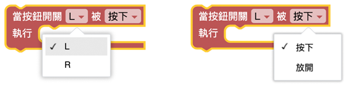
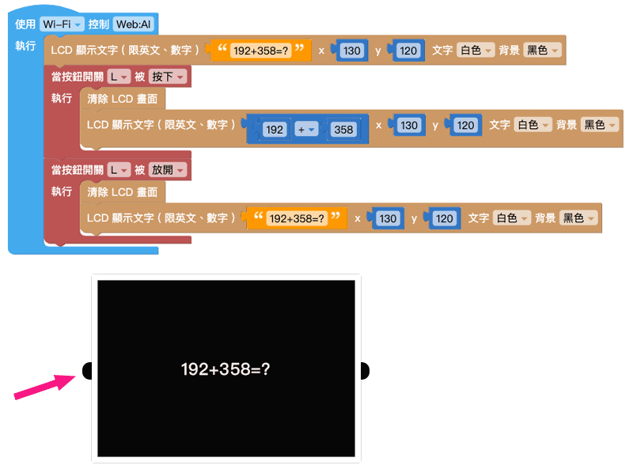
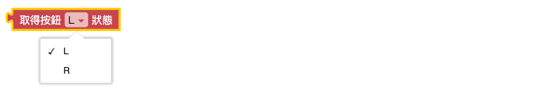

按鈕開關
「按鈕開關」積木可以感應 按下、放開 2 種按鈕操作，透過接收按鈕開關的動作，觸發後續的行為。

範例：用按鈕公布解答
- 先用「LCD 顯示文字」積木輸入數學問題「192+358=?」。
- 用「變數」積木設定為解答。
- 設定當 L 按鈕被按下時，清除 LCD 畫面，並顯示解答 ( 變數 x )。
- 設定當 L 按鈕被放開時，清除 LCD 畫面，並顯示數學問題「192+358=?」。
- 執行後，可以使用 L 按鈕不斷切換問題與答案。

取得按鈕狀態
按下或放開按鈕時，會傳送對應的指令到開發板中，使用「取得按鈕狀態」積木可以顯示接收到的按鈕狀態，並以 1 和 0 的方式表示。
- 按下：0
- 放開：1
